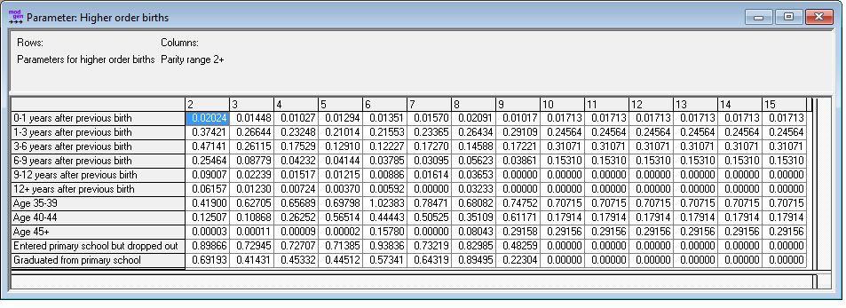

1.9. Script 9: Higher Order Births¶
Higher order births are estimated using hazard regression. Models are estimated separately by birth order. Baseline hazards are by time since last birth. Relative risks are estimated by education and broad age groups.
1.9.1. File Output¶
The R code below produces one parameter table as a Modgen .dat text file:
- Baseline and relative risks for higher order births by parity, accounting for time since last birth, age group, and education

1.9.2. Code¶
####################################################################################################
#
# DYNAMIS-POP Parameter Generation File 9 - Higher order births
# This file is generic and works for all country contexts.
# Input file: globals_for_analysis.RData (To generate such a file run the setup script)
# Last Update: Martin Spielauer 2018-05-12
#
####################################################################################################
####################################################################################################
# Clear work space, load required packages and the input object file
####################################################################################################
rm(list=ls())
library(haven)
library(dplyr)
library(data.table)
library(sp)
library(maptools)
library(survival)
library(fmsb)
library(eha)
load(file="globals_for_analysis.RData")
alldat <- g_births_dat
# Set Parameter Output File
parafile <- file(g_para_higherbirths, "w")
####################################################################################################
# Regression macro
####################################################################################################
BirthRegressionMacro <- function()
{
# Read stata file and select mothers
seldat <- alldat[!is.na(alldat$r_from),]
# Event ("Failure")
seldat$m_event <- FALSE
seldat$m_event[!is.na(seldat$r_to)] <- TRUE
# Time of interview
seldat$m_inter <- seldat$M_INTERV/12+1900
# Start of process (first birth)
seldat$m_start <- (seldat$r_from)/12+1900
# Remove births in interview month (no observation time) and births in same month
seldat <- seldat[seldat$m_start < seldat$m_inter & (is.na(seldat$r_to) | (seldat$r_from!=seldat$r_to)),]
# Second birth
seldat$m_birth <- (seldat$r_to)/12+1900
# End of process: at interview or at second birth
seldat$m_end <- seldat$m_inter
seldat$m_end[!is.na(seldat$m_birth)] <- seldat$m_birth[!is.na(seldat$m_birth)]
# Process start date (keep it for following splits)
seldat$m_origin <- seldat$m_start
# Calendar time split (3 period episodes)
seldatsplit <- survSplit(seldat, cut=g_birth_timecuts, end="m_end", event = "m_event", start="m_start", episode = "m_period" )
# # Age group split (first recode start and end in terms of mothers age)
seldatsplit$m_start <- seldatsplit$m_start - ((seldatsplit$M_BIRTH)/12+1900)
seldatsplit$m_end <- seldatsplit$m_end - ((seldatsplit$M_BIRTH)/12+1900)
seldatsplit <- survSplit(seldatsplit, cut=c(35,40,45), end="m_end", event = "m_event", start="m_start", episode = "m_agegr" )
# recode start and end with origin 0 at first birth
seldatsplit$m_start <- seldatsplit$m_start + ((seldatsplit$M_BIRTH)/12+1900) - seldatsplit$m_origin
seldatsplit$m_end <- seldatsplit$m_end + ((seldatsplit$M_BIRTH)/12+1900) - seldatsplit$m_origin
# new factor in reverse order
seldatsplit$r_period <- -seldatsplit$m_period + 3
# piecewise constant
birmodel <- phreg(Surv(time=seldatsplit$m_start, time2=seldatsplit$m_end, event = seldatsplit$m_event)
~ factor(r_period)+factor(m_agegr)+factor(M_EDUC),
data = seldatsplit,
dist = "pch",
cuts = c(1, 3, 6, 9, 12))
return(birmodel)
}
####################################################################################################
# Analysis birth 2
####################################################################################################
alldat$r_from <- alldat$M_B01
alldat$r_to <- alldat$M_B02
regres_02 <- BirthRegressionMacro()
coef_02 <- exp(regres_02$coefficients)
haz_02 <- regres_02$hazards
####################################################################################################
# Analysis birth 3
####################################################################################################
alldat$r_from <- alldat$M_B02
alldat$r_to <- alldat$M_B03
regres_03 <- BirthRegressionMacro()
coef_03 <- exp(regres_03$coefficients)
haz_03 <- regres_03$hazards
####################################################################################################
# Analysis birth 4
####################################################################################################
alldat$r_from <- alldat$M_B03
alldat$r_to <- alldat$M_B04
regres_04 <- BirthRegressionMacro()
coef_04 <- exp(regres_04$coefficients)
haz_04 <- regres_04$hazards
####################################################################################################
# Analysis birth 5 - problem
####################################################################################################
alldat$r_from <- alldat$M_B04
alldat$r_to <- alldat$M_B05
regres_05 <- BirthRegressionMacro()
coef_05 <- exp(regres_05$coefficients)
haz_05 <- regres_05$hazards
#############################################################################################################
# Analysis birth 6
####################################################################################################
alldat$r_from <- alldat$M_B05
alldat$r_to <- alldat$M_B06
regres_06 <- BirthRegressionMacro()
coef_06 <- exp(regres_06$coefficients)
haz_06 <- regres_06$hazards
####################################################################################################
# Analysis birth 7
####################################################################################################
alldat$r_from <- alldat$M_B06
alldat$r_to <- alldat$M_B07
regres_07 <- BirthRegressionMacro()
coef_07 <- exp(regres_07$coefficients)
haz_07 <- regres_07$hazards
####################################################################################################
# Analysis birth 8
####################################################################################################
alldat$r_from <- alldat$M_B07
alldat$r_to <- alldat$M_B08
regres_08 <- BirthRegressionMacro()
coef_08 <- exp(regres_08$coefficients)
haz_08 <- regres_08$hazards
####################################################################################################
# Analysis birth 9
####################################################################################################
alldat$r_from <- alldat$M_B08
alldat$r_to <- alldat$M_B09
regres_09 <- BirthRegressionMacro()
coef_09 <- exp(regres_09$coefficients)
haz_09 <- regres_09$hazards
####################################################################################################
# Analysis birth 10
####################################################################################################
alldat$r_from <- alldat$M_B09
alldat$r_to <- alldat$M_B10
regres_10 <- BirthRegressionMacro()
coef_10 <- exp(regres_10$coefficients)
haz_10 <- regres_10$hazards
####################################################################################################
# Produce parameter file
####################################################################################################
m_paras <- rbind(
c(haz_02,coef_02[c(3,4,5,6,7)]),
c(haz_03,coef_03[c(3,4,5,6,7)]),
c(haz_04,coef_04[c(3,4,5,6,7)]),
c(haz_05,coef_05[c(3,4,5,6,7)]),
c(haz_06,coef_06[c(3,4,5,6,7)]),
c(haz_07,coef_07[c(3,4,5,6,7)]),
c(haz_08,coef_08[c(3,4,5,6,7)]), ## for most country data, estimating higher than 8th birth produces NA
c(haz_08,coef_08[c(3,4,5,6,7)]), ## for births 8+ the model for 8th births is used
c(haz_08,coef_08[c(3,4,5,6,7)]),
c(haz_08,coef_08[c(3,4,5,6,7)]),
c(haz_08,coef_08[c(3,4,5,6,7)]),
c(haz_08,coef_08[c(3,4,5,6,7)]),
c(haz_08,coef_08[c(3,4,5,6,7)]),
c(haz_08,coef_08[c(3,4,5,6,7)])
)
####################################################################################################
# Write parameter file HigherBirthsParameters.dat
####################################################################################################
# Write the parameter HigherOrderBirthsPara[HIGHER_BIRTHS_PARA][PARITY_RANGE2]
cat("parameters {\n\n //EN Higher order births\ndouble HigherOrderBirthsPara[HIGHER_BIRTHS_PARA][PARITY_RANGE2] = {\n",
file=parafile)
cat(format(round(m_paras,5),scientific=FALSE), file=parafile, sep=", ", append=TRUE)
cat("\n }; \n};\n", file=parafile, append=TRUE)
close(parafile)